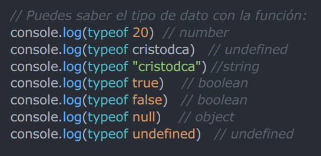

Clase 1 - ¿Qué es Javascript?
¿Cómo nace Javascript?
Nace de la necesidas de generar dinamismo en las páginas web.
¿Qué es Javascript?
Es un lenguaje interpretado, orientado a objetos, débilmente tipado y dinámico.
Débilmente tipado:
Se pueden hacer operaciones entre distintos tipos de datos.

Dinámico
Corre directamente en la etapa de Runtime sin pasar por una compilación previa.
Interpretado
El navegador lee línea a línea el código, gracias al moto JS V8.
Backwards Compatible
Todas las funciones nuevas de JS no generan conflictos con el trabajo anterior.
Clase 2 - Variables
Componentes principales
Datos que se guardan en memoria.
Tareas (funciones) que usan los datos.
Tipos de datos
Primitivos
Number
Este tipo de dato se usa para almacenar números, existiendo la variantes BigInt para números mayores a 253-1 o menores a -253-1. Además de aceptar valores con punto decimal, tiene valores simbólicos como: +Infinity, -Infinity y NaN ("Not a Number").
String
El tipo de dato String es usado para representar texto.
A diferencia de otros lenguajes de programación, como C, las cadenas de texto en Javascript son inmutables. Esto significa que no es posible modificar la cadena una vez creada.
Sin embargo, aun es posible realizar operaciones en la cadena para obtener otra distinta.
Booleanos
Los valores Booleanos representan una entidad lógica. Pueden tener dos valores: true o false
Se pueden obtener valores false de distintas maneras, por ejemplo: omitiendo el valor o con valores de 0, -0, null, false, NaN, undefined, o una cadena vacía ("").
Null y Undefined
Ambos valores Null y Undefined son conceptos abstractos.
Null solo tiene un valor que es: null, se usa para representar intencionalmente un valor nulo o "vacío".
Por otra parte, Undefined es una variable a la que no se le ha asignado un valor, dando como resultado el "valor" undefined
No primitivos
Se le llama así a los tipos de datos más complejos, como los de tipo Object o los Arrays.
typeof
Recuerda que siempre puedes usar la función typeof nativa de Javascript para saber el tipo de dato.

Variables
Una variable es el espacio para un valor de cualquier tipo (aunque su tipo se puede cambiar más adelante).
Existen distintas etapas en la creación de una variable "completa", como lo son la declaración y la inicialización.
Declaración de una variable
Existen distintos tipos de variables, pero por ahora nos enfocaremos en las declaradas a través del uso de la palabra reservada var. Tal como puedes ver en el siguiente ejemplo:
Es importante reconocer que en esta etapa, sólamente se reserva el espacio en memoria para guardar un valor, pero que aun no se le asigna dicho valor, por lo que por ahora la variable equivale a undefined.
Inicialización de una variable
Una vez declarada la variable, es preciso asignarle un valor a través del operando =.
Se puede declarar una variable e inicializarla al mismo tiempo, no solo con tipos de datos primitivos, si no complejos también.
Clase 3 - Funciones
Se puede entender a las funciones como un procedimiento, siendo un conjunto de instrucciones que realizan una determinada tarea, devolviendo una salida dependiente de la entrada.
Podemos encontrar distintos tipos de funciones dependiendo de su declaración, siendo las más comunes las funciones declarativas y expresivas.
Funciones declarativas
Una función declarativa o definida consta de la palabra reservada function, seguida del nombre de la función, una lista de parámetros entre paréntesis y separados entre sí por comas y llaves para definir la función.

Funciones expresivas
También conocidas como funciones anónimas, ya que no es requisito que las funciones lleven un nombre. Solo deben ser igualadas a una variable.
Quizá en este punto resulte un poco confuso el contenido del return. Por el momento basta con que comprendas que es una manera de enviar contenido dinámico, es decir que dependiendo del valor que se ingrese será lo que se imprimirá en consola.
Diferencias
La principal diferencia es que a las funcinoes declarativas se les aplica hoisting, y a la expresión de función, no.
De manera resumida hoisting significa que podemos llamar la función declarativa antes de que sea declarada, mientras que con la expresión función, no, habría que declararla primero, y después mandarla a llamar.